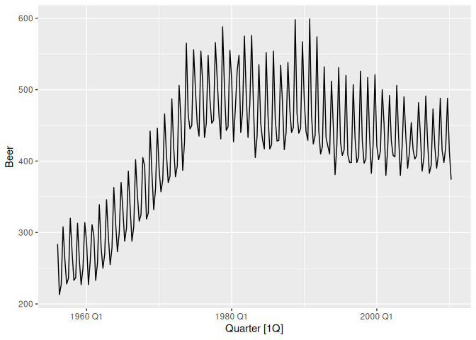
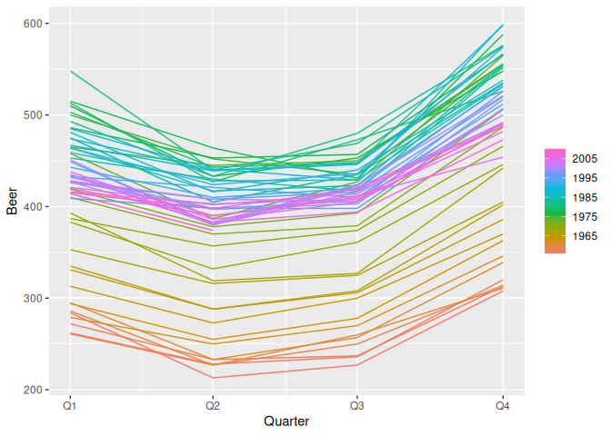
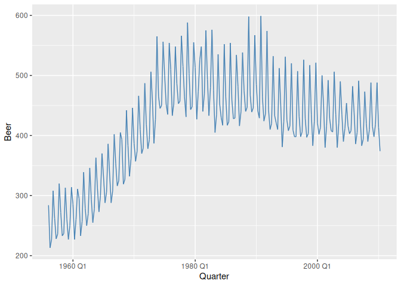
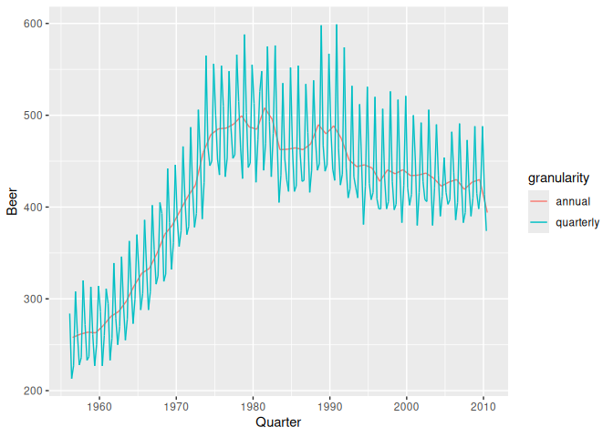
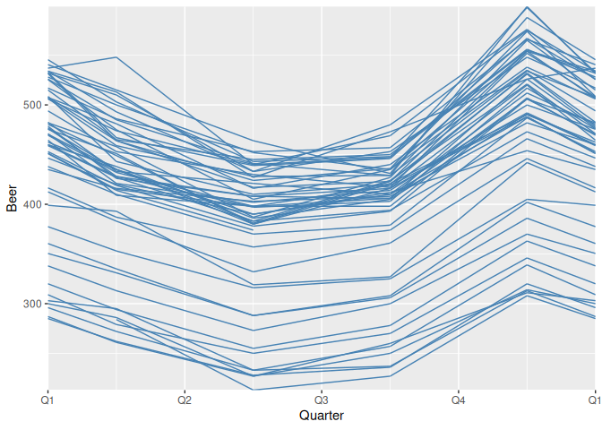
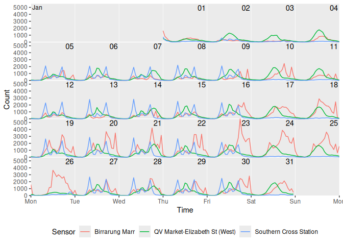

The ggtime package extends the capabilities of ‘ggplot2’ by providing grammatical elements and plot helpers designed for visualizing time series patterns. These functions use calendar structures implemented in the mixtime package to help explore common time series patterns including trend, seasonality, cycles, and holidays.
The plot helper functions make use of the tsibble data format in order to quickly and easily produce common time series plots. These plots can also be constructed with the underlying grammar elements, which allows greater flexibility in producing custom time series visualisations. The examples below cover both: plot helpers first, then the grammar elements they’re built from.
You can install the stable version from CRAN:
install.packages("ggtime")You can install the development version of ggtime from GitHub with:
# install.packages("remotes")
remotes::install_github("mitchelloharawild/ggtime")Plot helper functions turn a tsibble into a complete time series graphic in one call, such as a time plot or a seasonal plot. They’re quick to use, but only offer as much customisation as their arguments allow.
The simplest time series visualisation is the time plot, which shows time continuously on the x-axis with the measured variable on the y-axis. This is useful for identifying patterns that persist over a long period of time, such as trends and seasonality. autoplot() creates a time plot directly from a tsibble.
library(ggtime)
library(ggplot2)
library(tsibble)
library(dplyr)
tsibbledata::aus_production |>
autoplot(Beer)
To see the shape of the annual seasonal pattern, it’s more useful to show time cyclically on the x-axis, making it easier to identify the peaks, troughs, and overall shape of the seasonality. gg_season() creates this seasonal plot from a tsibble.
tsibbledata::aus_production |>
gg_season(Beer)
ggtime includes several other plot helpers for exploring and diagnosing time series. gg_subseries() and gg_lag() show seasonal changes over time and relationships with past values; gg_arma() and gg_irf() plot characteristic ARMA roots and impulse response functions; and gg_tsdisplay()/gg_tsresiduals() combine several of these into a single ensemble for exploring a series or diagnosing a model’s residuals. autoplot()/autolayer() extend beyond tsibbles too, dispatching on the model output from the fable/feasts ecosystem to plot forecasts and their prediction intervals (fbl_ts), the components of a decomposition (dcmp_ts), and auto-/cross-correlation results (tbl_cf).
For full control over a time series plot’s appearance, ggtime’s grammar extensions add time-aware geoms, scales, and coordinate systems that behave like any other ggplot2 component. Use them to combine layers, apply your own themes and colour scales, and build visualisations the plot helpers don’t cover.
geom_time_line() is a time-aware extension of ggplot2::geom_line() that keeps a line’s slope an accurate reflection of the rate of change, even across timezone changes, gaps, and duplicated time points.
tsibbledata::aus_production |>
ggplot(aes(x = Quarter, y = Beer)) +
geom_time_line(colour = "steelblue")
scale_x_mixtime() is the position scale behind every mixtime time axis, applied automatically whenever a mixtime vector is mapped to a plot. It maps time points of different granularities onto one shared axis, as shown below with quarterly and annual Beer production drawn together, and takes calendrical durations for breaks (time_breaks) and calendar-aware format strings for labels (time_labels).
aus_beer <- tsibbledata::aus_production |>
as_tibble() |>
transmute(Quarter = mixtime::yearquarter(as.Date(Quarter)), Beer)
aus_beer_annual <- aus_beer |>
group_by(Quarter = mixtime::year(Quarter)) |>
summarise(Beer = mean(Beer), .groups = "drop")
bind_rows(
quarterly = aus_beer,
annual = aus_beer_annual,
.id = "granularity"
) |>
ggplot(aes(Quarter, Beer, colour = granularity)) +
geom_time_line() +
scale_x_mixtime(time_breaks = mixtime::years(10L))
coord_loop() loops the time axis around a calendrical period, so a continuous time axis can be compared cyclically instead of being discretised into a seasonal factor. Looping the time plot yearly reveals the same seasonal shape as the seasonal plot above, built entirely from grammar.
aus_beer |>
ggplot(aes(x = Quarter, y = Beer)) +
geom_time_line(colour = "steelblue") +
coord_loop(time_loops = mixtime::years(1L))
coord_calendar() arranges time into a calendar-like grid of rows and columns, useful for visualising events over short intervals within a long time span, such as holidays. Arranging hourly pedestrian counts into a weekly calendar reveals a surge in activity at one sensor during the Australian Open in late January.
tsibble::pedestrian |>
mutate(Time = mixtime::datetime(Date_Time)) |>
filter(Time < mixtime::datetime("2015-02-01 00:00:00")) |>
ggplot(aes(x = Time, y = Count, colour = Sensor)) +
geom_line() +
coord_calendar(rows = mixtime::weeks(1L), cols = NULL) +
theme(legend.position = "bottom")